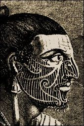
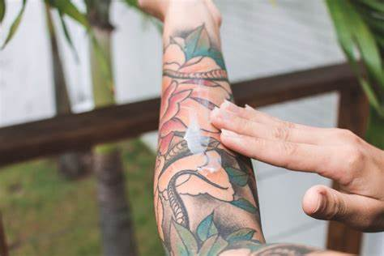
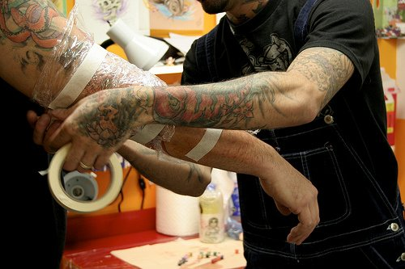

Você já conhece um dos melhores tatuadores do mundo?
Paul Booth
Paul Booth é um tatuador, escultor, pintor, cineasta e músico que vive em Nova York . Booth é conhecido por seu uso de tatuagem de tinta preta e cinza retratando peças de estilo surrealismo escuro. Ele ganhou seguidores cult em todo o mundo e teve uma clientela de celebridades , que inclui membros de bandas de rock como Cheeseburger, Slipknot, Mudvayne, Slayer, Pantera, Soulfly e Sepultura .
História da tatuagem
A tatuagem é o resultado de um depósito de pigmentos coloridos (ou não) insolúveis na pele. Esses pigmentos formam um desenho e permanecem definitivamente na camada sub-cutânea. Hoje em dia, a técnica mais comum introduz esses pigmentos com o uso de agulhas especiais na segunda camada do tecido epitelial (pele), na região da derme. Mas há outras técnicas utilizadas, como a sumi, que usa o bambu em lugar de agulhas. A tatuagem surgiu primeiramente entre tribos e clãs, como fator distintivo de grupo. Estima-se que isso ocorreu há pelo menos 3500 anos atrás. Inclusive, foi comprovada uma tatuagem em uma múmia do século VII dos nossos tempos – e há ainda quem diga que é um sintoma da modernidade. Depois, com as evoluções sociais e da própria tatuagem passou a ser o que é hoje, ou seja, mais uma expressão da personalidade, uma marca particular do indivíduo. Segundo o jornalista João do Rio: “primeiro homem, ao perder o pêlo, descobriu a tatuagem”. Outra forma de uso da tatuagem era para marcar os fatos que marcavam fases da vida, dentre eles o nascimento, a puberdade, a reprodução e a morte. Em tempos modernos, a tatuagem se disseminou primeiro entre marinheiros para, décadas depois se tornar comum entre presidiários. Foi por conta disso que, por um longo tempo tatuados foram marginalizados. O crescimento das tattoos em peles femininas é algo recente. Sendo hoje visto como algo normal, foi outrora visto como bizarrice tamanha ao ponto de mulheres tatuadas se tornarem atrações em circo. Mas nem sempre foi motivo de entretenimento, houve ainda momentos de utilização de tatuagens para fins terríveis, como para marcação de prisioneiros judeus, que foram numerados durante a Segunda Guerra Mundial. Com o tempo ela passou a ser utilizada para relatar os fatos da vida social, como:
- transformar-se em guerreiro;
- tornar-se sacerdote;
- tornar-se rei;
- casar-se;
- celebrar a vida;
- identificar prisioneiros;
- pedir proteção ao imponderável
- garantir a vida do espírito durante e depois do corpo.
História da tatuagem
Após fazer uma tatuagem é muito importante cuidar da pele, não apenas para evitar uma possível infecção, mas também para garantir que o desenho fica bem definido e as cores se mantêm por muitos anos. Dessa forma, os cuidados com a tatuagem devem começar logo após sair do estúdio de tatuagem e manter-se por toda a vida.
O que fazer no primeiro dia?
Após fazer a tatuagem, a pele encontra-se bastante machucada e, por isso, existe um elevado risco de infecção, já que as bactérias e vírus conseguem chegar mais facilmente no interior do corpo. Assim, logo desde o momento em que se sai do estúdio de tatuagem é importante manter a pele protegida com um pedaço de celofane ou plástico firme, por pelo menos 4 horas. Mas este tempo pode variar de acordo com cada tatuagem, devendo-se sempre receber orientação do tatuador.
O que não fazer nos primeiros dias
- Não retirar as casquinhas que começam a se formar nos primeiros 4 dias após a tatuagem, pois ainda podem estar ligadas a camadas mais profundas da pele, onde a tinta ainda está se alojando;
- Não coçar a tatuagem, pois pode agravar a irritação da pele e promover o surgimento de uma infecção devido à presença de bactérias debaixo das unhas;
- Não mergulhar a tatuagem em água, especialmente em locais públicos como piscinas ou praias, pois a grande parte das bactérias se desenvolve na água, aumentando o risco de infecção;
- Evitar pegar sol, porque os raios UV causam inflamação da pele e podem acabar deslocando as camadas de tinta da tatuagem, além de atrasar a cicatrização;
- Evitar pegar sol, porque os raios UV causam inflamação da pele e podem acabar deslocando as camadas de tinta da tatuagem, além de atrasar a cicatrização;
- Evitar alimentos que prejudicam a cicatrização, como carne de porco, frituras e embutidos. Confira uma lista dos alimentos que deve evitar depois de fazer tatuagem;
- Não usar roupa muito apertada, pois evita a respiração da pele e também pode acabar puxando as casquinhas de pele que ajudam na cicatrização.